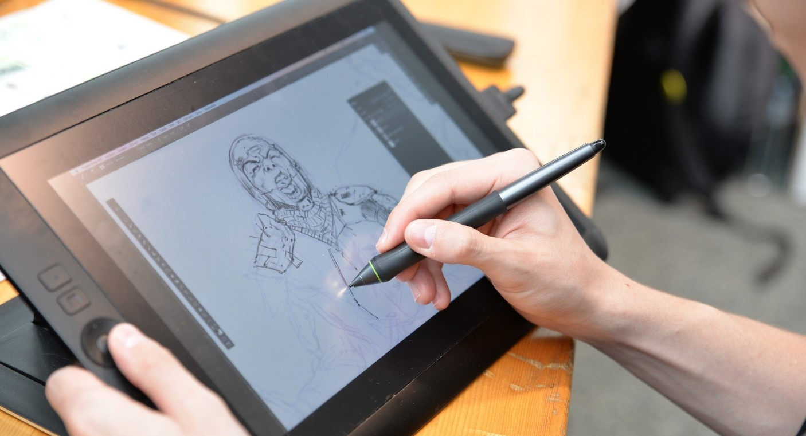
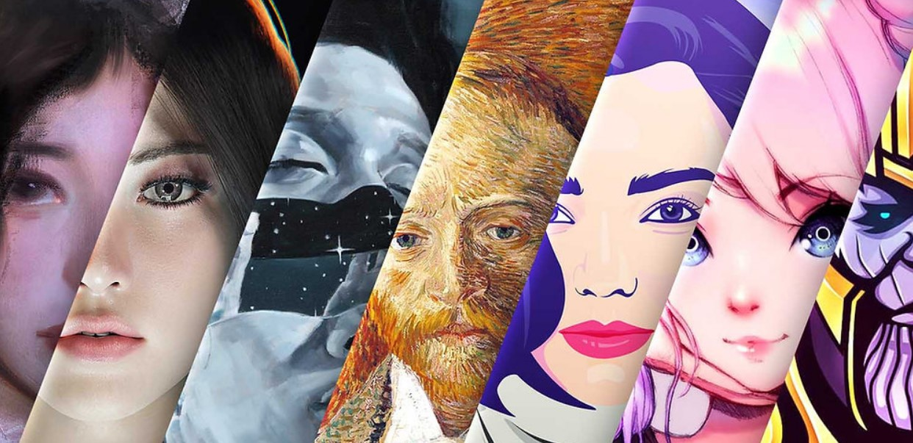

Algumas dicas para iniciar ou melhorar seu estilo no mundo da arte digital:
Escolha o Software Adequado: Existem várias opções de software para ilustração digital, como Adobe Illustrator, Adobe Photoshop, Procreate, Clip Studio Paint, entre outros. Escolha o que melhor se adapta às suas necessidades e preferências.
Use uma Mesa Digitalizadora:
Investir em uma mesa digitalizadora pode tornar o processo de desenho mais natural e preciso, oferecendo sensibilidade à pressão e inclinação.

Entenda as Ferramentas Básicas:
Familiarize-se com as ferramentas básicas do software escolhido, como pincéis, lápis, e borrachas. Explore as opções de personalização para ajustar as configurações de acordo com suas preferências.
Use Camadas de Forma Eficiente:
Aproveite o poder de manipular camadas para organizar elementos em sua ilustração. Isso permite que você faça edições sem afetar outros elementos.
Experimente Diferentes Pincéis:
Explore uma variedade de pincéis disponíveis no seu software. Pincéis diferentes podem criar texturas e estilos únicos.
Crie seu estilo único:
Embora aprender com outros artistas seja valioso, também é importante desenvolver seu estilo único. Experimente e descubra o que funciona melhor para você.

Explore Recursos de Transformação:
Utilize ferramentas de transformação, como escala, rotação e deformação, para ajustar elementos em sua ilustração.
Ajuste a Opacidade e o Modo de Mesclagem:
Modificar a opacidade e o modo de mesclagem de camadas pode adicionar profundidade e textura à sua ilustração. Experimente diferentes configurações para alcançar os efeitos desejados.
Use referências:
Não hesite em usar referências ao desenhar. Fotografias, outras artes e ilustrações podem fornecer insights valiosos e ajudar a melhorar suas habilidades.
Pratique regularmente:
Como em qualquer habilidade, a prática constante é fundamental. Reserve um tempo regular para desenhar e experimentar novas técnicas.